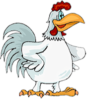
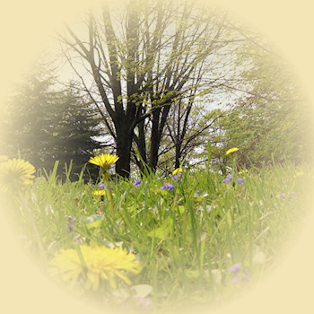
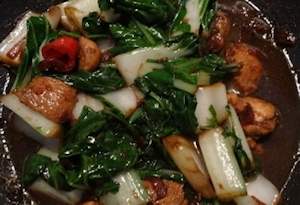

|
Een klein dorpje ergens in België, Keversel genoemd, met zo’n 850 inwoners, een kerkje, een café, een winkeltje en een schooltje. Uiteraard wist iedereen altijd wat, waar en met wie er iets gebeurde. In de zomer vond je de mannen in het café met een pint, een sigaret en een kaartspel. De vrouwen stonden bij elkaar om over de afwezigen te roddelen.
Het moet ergens in maart 1955 zijn geweest dat er nieuwe mensen kwamen wonen.
De vrouw was altijd in het zwart gekleed met veel stukken van kant erin verwerkt. Haar zwart-rood gekleurde ogen en haar zwarte nagels zagen eruit of ze in een kolenhok had gewerkt. Haar lippen waren vuurrood. Haar lange haren waren ravenzwart. Ze droeg donkerrode netkousen die ze zelf kapot gesneden had. De zware schoenen die ze droeg waren geen echte schoenen, maar het waren ook geen laarzen. Ze kwamen net tot over haar enkels en met donkerrode veters geknoopt.
De man op zijn beurt zag er nog bizarder uit. Hij had halflang sluik zwart haar. Zijn ogen en nagels én lippen waren ook zwart gekleurd. Hij droeg een zwarte lange broek, die je enkel op zondag aantrekt als je naar de mis gaat. Zijn hemd was onberispelijk wit, met de kraag recht omhoog, en het leek zelfs of zijn hemd aan de kraag bezet was met tientallen slabbetjes. Zijn zwarte jas kwam tot aan zijn kuiten.
Nu hadden de bewoners écht iets om over te roddelen. Zelfs de mannen deden met hun vrouwen mee. De kinderen op het dorpsplein stoven uit elkaar als ze het koppel zagen. De dorpelingen hadden ook gezien dat er bij beiden een ijzertje door hun wenkbrauw stak én ook door één neusgat. Het meest eigenaardige was dat ze ook een groot kruis rond hun nek hadden hangen. “Hoe kon Christus zulke mensen opnemen in zijn koninkrijk?” De dorpspastoor had heel wat uit te leggen aan de gemeenschap. Ze begrepen hun God niet meer: die twee waren toch de duivel, satan, lucifer en Beëlzebub in één persoon. Ze brachten het verderf mee in hun godvruchtige gemeenschap. “De burgemeester moest ze uit hun dorp verbannen en verjagen, vóór dat ze een vloek over de bevolking konden uitspreken.” De moeders waren heel ongerust want de ketters zouden hun kinderen meepakken en er de paddenspreuk over uitspreken en dan konden ze paddensoep eten.
Toch waren er enkele kleine, stoere boefjes, die hun moed wilden tonen. Ze gluurden heel voorzichtig door het raam en zagen de vrouw in de keuken bezig. Ze had in één hand een levende kip vast en in haar andere hand had ze een bijl. De bezem stond langs haar. De jongetjes keken elkaar aan en stoven uiteen. Had de vrouw hen gezien en moest hun jonge leven ook zo eindigen?
Een uurtje later zagen ze de vrouw met een rieten mand in de arm. Ze liep rustig in de wei en keek naar beneden. Ze zocht iets. Soms bukte ze zich en ze sneed met haar mes onkruid af. Via het bos ging ze naar de beek. Ze kwam terug met een mand vol onkruid en bloemen. Daar zou ze zeker brouwseltjes van maken om de kinderen mee te verdoven, veronderstelden de moeders.
Als het mooi weer was, zag je nu de mannen én vrouwen in het café om te roddelen. Er was eigenlijk maar één onderwerp: de indringers. Iedereen had een eigen mening. Ook het koppel ging een stukje wandelen. Als ze langs het café kwamen, verstomden alle gesprekken en werden ze bekeken. Als het koppeltje in hun richting keek en knikte, werden de hoofden snel omgedraaid. Het leven in Keversel was op zijn kop gezet en dat enkel door de komst van die twee personen.
De vrouw kwam ook geregeld in het winkeltje. Ze kocht nochtans enkel maar gewone huishoudelijke dingen. De winkeljuffrouw stotterde de prijs die de vrouw betaalde en met een groet ging ze terug naar huis. In het winkeltje was er nadien een geroezemoes van belang: “Wat heeft ze gekocht? Waarvoor gaat ze die dingen gebruiken?” En zo ging het telkens maar door.
De stoere jongens gluurden nog steeds binnen, maar er kwamen nu ook andere verhalen. Soms kwam er een lekkere geur uit het huisje. Sommige dorpsbewoners roken het ook. Ze hoorden van de winkeljuffrouw dat ze een fijne zangerige stem had. Het werd stilaan rustiger in het dorpje. Maar met het rare echtpaar had nog niemand gesproken. Dat was een brug te ver. Ze knikten en glimlachten als ze elkaar tegenkwamen. Daar bleef het bij. Het roddelen stopte niet, alhoewel er nu wel weer meer over de inwoners zelf gesproken werd. Over de ziektes van de buurvrouw, over het gebroken been van de zoon van de overbuurvrouw, over het oude mannetje op het einde van de straat. Hij lag al dagenlang in het bed en bleef maar kuchen en hoesten. De dokter gaf hem sterke medicijnen. Enkele vrouwen uit het dorp kenden middeltjes tegen de hoest, maar het was vechten tegen de bierkaai. Zouden ze hem niet beter naar het ziekenhuis in de stad laten brengen? Maar dan zat het oude vrouwtje heel alleen. Dat was geen oplossing. Het oude mannetje bleef erin geloven dat hij beter werd. Hij geloofde in God en Hij zou hem wel genezen.
Op een regenachtige dinsdagnamiddag zagen ze de vrouw met een zwarte regencape en een paraplu met kant in de ene hand. In de andere arm had ze weer haar mand, maar nu stond er een pot in. De vrouwen keken achter hun gordijnen en vroegen zich af, wat er zou gebeuren. Ze liep verder de straat af en belde aan de deur van het oude echtpaar. Het vrouwtje deed de deur open maar ook meteen weer dicht. De vrouw belde nog enkele keren maar de deur bleef gesloten. Ze klopte ook enkele keren op het raam. Door het raam zag ze het dametje in de keuken. Dan maar langs de achterdeur proberen. Het omaatje deed de deur op een kiertje open. “Mevrouwtje, u moet geen schrik van me hebben. Ik heb gehoord dat je man zo ziek is. Ik heb iets bij voor hem.” sprak ze met een zachte stem. “Ik heb kippensoep voor hem gemaakt met speciale kruiden die ik in de natuur gevonden heb. Hij zal er zeker van opknappen. Ik zal de pot hier aan de deur zetten, dan kun je ze nemen. Geef je man een bord soep en laat hem die opdrinken. Je zal merken dat hij in slaap zal vallen en binnen een paar uurtjes opnieuw wakker wordt en zich een stukje beter zal voelen. Hij zal zich al een stukje beter voelen. Doe morgen hetzelfde en hij zal snel weer op de been zijn. Moest je te weinig kippensoep hebben, mag je gerust langskomen om er nog te halen. Tot ziens mevrouwtje. En de ketel… die krijg ik wel terug.” sprak ze verder met haar zachte stem. Toen ging ze weer terug naar huis.
Het vrouwtje nam de ketel soep een rook eraan. “Hmm, dat ruikt lekker. Net een kippen-kruidensoep. Ik ga er toch eerst zelf een beetje van eten.” Inderdaad, het was een zeer lekkere soep. Het vrouwtje zou ze zelfs helemaal leeg eten, maar dat kon niet. Ze bracht de soep naar haar man. Hij vond dat zijn vrouw overheerlijk gekookt had. Enkele tellen later viel hij in slaap. Toen hij wakker werd voelde hij zich al een beetje sterker. De volgende dag opnieuw kippensoep eten en twee dagen later zag je het oude echtpaar met een zwarte ketel naar het huis van het koppeltje gaan. Iedereen vroeg zich af wat er eigenlijk gebeurd was. De twee oude mensen werden ondertussen omringd door bijna het halve dorp. Ook de burgemeester, de pastoor en het schoolhoofd stonden erbij en luisterden naar het verhaal van de oudjes. Samen gingen ze naar het huisje van het rare koppeltje. De vrouw deed de deur open. De meeste inwoners stonden achter het oude koppeltje en zwegen. Ze nodigde iedereen uit om binnen te komen. De Keverselnaren kwamen in een donker, zwart en rood huis terecht. Brrr zo griezelig. Maar het heerlijk kopje kruidenthee smaakte hen.
Toen deed ze haar verhaal. Ze had gestudeerd voor arts, maar nooit het diploma gehaald. Ze leefde liever van en in de natuur. Ze had boeken verslonden over kruidengeneeskunde en dat was haar hobby geworden. Waarom ze zo gekleed waren? Ze gingen niet akkoord met alles wat ‘gewoontjes’ was. Ze wilden de wereld choqueren en een statement maken. Dat hadden ze gevonden bij een groep die zich ‘Gothrix’ noemde, mensen van vlees en bloed, maar met een andere levensfilosofie.
En nu, in 2016 heeft het koppel twee kinderen, een klein kruidenwinkeltje en regelmatig brengt ze haar kennis over aan geïnteresseerde mensen over haar kruidenkennis.
De rust was teruggekeerd in het dorpje Keversel. Een dorpje met een kerkje, een café, een winkeltje, een schooltje én een kruidenwinkeltje. |